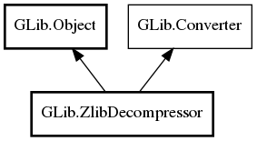

GLib.ZlibDecompressor Reference Manual
Packages
gio-2.0
GLib
ZlibDecompressor
file_info
format
ZlibDecompressor
get_file_info
ZlibDecompressor
Object Hierarchy:

Description:
public
class
ZlibDecompressor
:
Object
,
Converter
Namespace:
GLib
Package:
gio-2.0
Content:
Properties:
public
FileInfo
file_info
{
get
; }
public
ZlibCompressorFormat
format
{
construct
set
;
get
; }
Creation methods:
public
ZlibDecompressor
(
ZlibCompressorFormat
format)
Methods:
public
weak
FileInfo
get_file_info
()